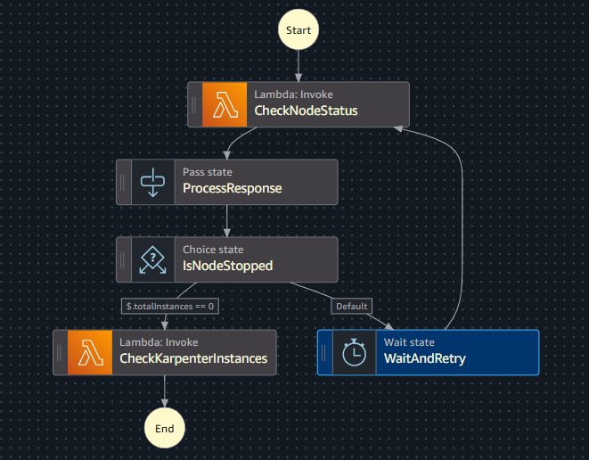

Stopping EKS Test Environments: Karpenter, Step Functions & the Race Condition You Didn't See Coming
Production Deep Dive — Real problems, non-obvious solutions, working code.

TL;DR
Running EKS with both Cluster Autoscaler-managed node groups and Karpenter-managed nodes creates a race condition when you try to stop test environments overnight. Scale the ASG to zero and Karpenter immediately provisions replacement nodes to maintain pod scheduling. You cannot win with a simple scale-down script.
The solution is a coordinated, tag-driven shutdown orchestrated by AWS Step Functions: scale the ASG to zero first, wait until the MNG nodes are fully terminated, then identify and terminate Karpenter-provisioned nodes by their tags. A Lambda function handles each phase. The Step Function handles the wait-and-retry loop between them.
This post documents the exact architecture, the Karpenter tagging strategy, the full Lambda code, and the Step Function Terraform that runs this in production.
The Problem — Why Obvious Solutions Fail
The Setup
The test environment runs on an EKS cluster with two compute tiers:
- Managed Node Group (MNG) — On-Demand EC2 instances, managed by Cluster Autoscaler via an Auto Scaling Group
- Karpenter NodePool — dynamically provisioned EC2 instances, managed directly by Karpenter via the EC2 Fleet API
To save cost overnight and on weekends, the goal was simple: stop all EC2 nodes in the test cluster when nobody is using it, and start them again in the morning.
Attempt 1 — Scale the ASG to Zero
aws autoscaling update-auto-scaling-group \
--auto-scaling-group-name eks-nodegroup-asg \
--min-size 0 \
--desired-capacity 0Result: The MNG nodes terminate. Within 60 seconds, Karpenter detects that pods are now Pending
— because the MNG nodes that were hosting them are gone. Karpenter does exactly what it is designed to do: it
provisions new nodes to satisfy the pending pods. The cluster is never empty. The cost saving never
materialises.
Attempt 2 — Delete the Karpenter NodePool
Deleting the NodePool would prevent Karpenter from provisioning new nodes. But it also destroys the NodePool configuration — restoring it in the morning requires re-applying the Helm chart, which takes time and is fragile in an automated schedule.
Attempt 3 — Suspend Karpenter
Scaling Karpenter's controller deployment to zero replicas stops it from provisioning new nodes. But pods
remain in Pending state indefinitely — they do not gracefully reschedule, they just wait.
Dependent services that poll the cluster health assume the cluster is broken, not sleeping. This caused false
alerts and confusion.
The Root Cause
The race condition exists because Karpenter and the ASG are independent control loops. Disabling one without coordinating the other creates an unstable intermediate state. The solution requires a sequenced, coordinated shutdown — not a simultaneous one.
The Solution Architecture
EventBridge Schedule (8pm weekdays)
↓
Lambda: lambda_handler(action='stop')
↓
Phase 1: list_all_clusters()
→ Find clusters tagged autoshut=true + project=eks-platform-test
↓
Phase 2: stop_clusters()
→ Scale each MNG ASG: MinSize=0, DesiredCapacity=0
→ MNG EC2 nodes begin terminating
↓
Phase 3: Start Step Function
→ Hands off to the wait-and-retry loop
↓
Step Function: CheckNodeStatus
→ Lambda(action='node_status') — count ASG instances
↓
Step Function: IsNodeStopped
→ totalInstances == 0? → CheckKarpenterInstances
→ Default (still running) → WaitAndRetry (300 seconds) → CheckNodeStatus
↓
Step Function: CheckKarpenterInstances
→ Lambda(action='check') — terminate_tagged_instances()
→ Find EC2 instances tagged karpenter=true + autoshut=true + project=eks-platform-test
→ Terminate them
↓
End — cluster is fully stoppedThe Step Function state machine:
Start
↓
[Lambda] CheckNodeStatus ←──────────────────┐
↓ │
[Pass] ProcessResponse │
↓ │
[Choice] IsNodeStopped │
├── $.totalInstances == 0 → CheckKarpenterInstances → End
└── Default ──────────────→ [Wait 300s] WaitAndRetry ─┘Why this sequence works: Karpenter cannot provision new nodes once the pods are evicted and
the MNG nodes are gone — there are no pending pods to trigger provisioning. By the time the Step Function
confirms totalInstances == 0, Karpenter has nothing to react to. The
CheckKarpenterInstances phase then terminates any Karpenter-provisioned nodes that came up
during the MNG scale-down window — the brief period when pods were pending and Karpenter was still
active.

The Karpenter Tagging Strategy
For the Lambda to identify Karpenter-provisioned nodes, those nodes must carry identifiable tags. The tags are applied at the EC2NodeClass level — every node Karpenter provisions inherits them automatically.
EC2NodeClass — Tag Configuration
# nodeclass.yaml (Helm template)
apiVersion: karpenter.k8s.aws/v1
kind: EC2NodeClass
metadata:
name: nodes-class-{{ .Values.karpenter.settings.clusterName }}
spec:
amiFamily: {{ .Values.amiFamily }}
instanceProfile: {{ .Values.instanceProfile }}
subnetSelectorTerms:
{{- range .Values.subnetIds }}
- id: {{ . }}
{{- end }}
securityGroupSelectorTerms:
{{- range .Values.securityGroupIds }}
- id: {{ . }}
{{- end }}
amiSelectorTerms:
- id: {{ .Values.amiId }}
tags:
{{- toYaml .Values.tags | nindent 8 }}
# Tags from values.yaml propagate to every EC2 instance Karpenter launches
# This is what makes them discoverable by the Lambda shutdown functionvalues.yaml — Tag Definitions
# values.yaml
karpenter:
controller:
resources:
requests:
cpu: 1
memory: 1Gi
limits:
cpu: 1
memory: 1Gi
extraEnv:
- name: AWS_REGION
value: eu-west-1
amiFamily: AL2023
amiId: ami-08a447df547321d30
nodeRequirements:
- key: kubernetes.io/arch
operator: In
values: ["amd64"]
- key: kubernetes.io/os
operator: In
values: ["linux"]
- key: karpenter.k8s.aws/instance-category
operator: In
values: ["c", "m", "r"]
- key: karpenter.k8s.aws/instance-generation
operator: Gt
values: ["4"]
- key: karpenter.sh/capacity-type
operator: In
values: ["on-demand"]
tags:
project: eks-platform-test # Project identifier — matches Lambda PROJECT_VAL
karpenter: "true" # Identifies this as a Karpenter-managed node
autoshut: "true" # Marks this node as eligible for auto-shutdownNodePool — References the NodeClass
# nodepool.yaml (Helm template)
apiVersion: karpenter.sh/v1
kind: NodePool
metadata:
name: nodes-pool-{{ .Values.karpenter.settings.clusterName }}
spec:
template:
spec:
requirements:
{{- toYaml .Values.nodeRequirements | nindent 8 }}
nodeClassRef:
group: karpenter.k8s.aws
kind: EC2NodeClass
name: nodes-class-{{ .Values.karpenter.settings.clusterName }}
limits:
cpu: 1000
disruption:
consolidationPolicy: WhenEmptyOrUnderutilized
consolidateAfter: 1mWhy tags on the NodeClass, not the NodePool: Tags defined in the EC2NodeClasstagsblock are applied directly to the EC2 instances that Karpenter launches. Tags on the NodePool are Kubernetes labels — they do not propagate to EC2. The Lambda usesec2_client.describe_instances()with tag filters, so the tags must be on the EC2 instance itself. This was the first issue we hit.
The Lambda Function
The Lambda handles all four actions — start, stop, check, and
node_status — from a single function. The Step Function calls it with different action payloads
for each phase.
# autoshut_eks.py
import boto3
import logging
import os
ec2_client = boto3.client('ec2')
eks_client = boto3.client('eks')
autoscaling_client = boto3.client('autoscaling')
stepfunctions_client = boto3.client('stepfunctions')
logger = logging.getLogger()
logger.setLevel(logging.INFO)
# Environment variables — injected by Terraform
autoshut_tag = os.environ['AUTOSHUT_TAG'] # Tag key to identify eligible clusters
autoshut_val = os.environ['AUTOSHUT_VAL'] # Tag value (e.g. "true")
project_tag = os.environ['PROJECT_TAG'] # Project tag key (e.g. "project")
project_val = os.environ['PROJECT_VAL'] # Project tag value (e.g. "eks-platform-test")
desired_capacity = os.environ['DESIRED_CAPACITY'] # Target capacity on start-up
min_size = os.environ['MIN_SIZE'] # Min size on start-up
step_function_arn = os.environ['STEP_FUNCTION_ARN']
def list_all_clusters():
"""
Find EKS clusters that have the autoshut and project tags on their node groups.
Only clusters explicitly tagged for auto-shutdown are affected.
"""
clusters = []
autoshut_clusters = []
response = eks_client.list_clusters()
clusters.extend(response['clusters'])
for cluster_name in clusters:
try:
nodegroups_response = eks_client.list_nodegroups(clusterName=cluster_name)
for nodegroup_name in nodegroups_response['nodegroups']:
nodegroup_info = eks_client.describe_nodegroup(
clusterName=cluster_name,
nodegroupName=nodegroup_name
)
tags = nodegroup_info['nodegroup'].get('tags', {})
if tags.get(autoshut_tag) == autoshut_val and tags.get(project_tag) == project_val:
autoshut_clusters.append(cluster_name)
except Exception as e:
logger.error(f"Error processing nodegroups for cluster {cluster_name}: {str(e)}")
continue
logger.info(f"Found {len(autoshut_clusters)} clusters eligible for auto-shutdown")
return autoshut_clusters
def list_cluster_asgs(cluster_list):
"""
Get the ASG names for all node groups in the eligible clusters.
"""
asg_names = []
for cluster_name in cluster_list:
try:
nodegroups = eks_client.list_nodegroups(clusterName=cluster_name)['nodegroups']
for nodegroup_name in nodegroups:
nodegroup_info = eks_client.describe_nodegroup(
clusterName=cluster_name,
nodegroupName=nodegroup_name
)['nodegroup']
asg_name = nodegroup_info.get('resources', {}).get('autoScalingGroups', [{}])[0].get('name')
if asg_name:
asg_names.append(asg_name)
logger.info(f"Found ASG: {asg_name} in node group {nodegroup_name}")
except Exception as e:
logger.error(f"Error processing cluster {cluster_name}: {str(e)}")
continue
return asg_names
def stop_clusters(cluster_list):
"""
Phase 1 of shutdown: scale all MNG ASGs to zero.
Karpenter will react to pending pods — the Step Function handles waiting
for MNG termination before killing Karpenter nodes in Phase 2.
"""
for cluster_name in cluster_list:
try:
nodegroups = eks_client.list_nodegroups(clusterName=cluster_name)['nodegroups']
for nodegroup_name in nodegroups:
nodegroup_info = eks_client.describe_nodegroup(
clusterName=cluster_name,
nodegroupName=nodegroup_name
)['nodegroup']
asg_name = nodegroup_info.get('resources', {}).get('autoScalingGroups', [{}])[0].get('name')
if asg_name:
autoscaling_client.update_auto_scaling_group(
AutoScalingGroupName=asg_name,
MinSize=0,
DesiredCapacity=0
)
logger.info(f"Scaled down nodegroup {nodegroup_name} in cluster {cluster_name}")
except Exception as e:
logger.error(f"Error stopping cluster {cluster_name}: {str(e)}")
def start_clusters(cluster_list):
"""
Wake-up path: restore ASG min size and desired capacity.
Karpenter will resume provisioning as pods become pending.
"""
for cluster_name in cluster_list:
try:
nodegroups = eks_client.list_nodegroups(clusterName=cluster_name)['nodegroups']
for nodegroup_name in nodegroups:
nodegroup_info = eks_client.describe_nodegroup(
clusterName=cluster_name,
nodegroupName=nodegroup_name
)['nodegroup']
asg_name = nodegroup_info.get('resources', {}).get('autoScalingGroups', [{}])[0].get('name')
if asg_name:
autoscaling_client.update_auto_scaling_group(
AutoScalingGroupName=asg_name,
MinSize=int(min_size),
DesiredCapacity=int(desired_capacity)
)
logger.info(f"Scaled up nodegroup {nodegroup_name} in cluster {cluster_name}")
except Exception as e:
logger.error(f"Error starting cluster {cluster_name}: {str(e)}")
def terminate_tagged_instances():
"""
Phase 2 of shutdown: find and terminate Karpenter-provisioned nodes.
Uses EC2 tag filters — tags must be set in the EC2NodeClass, not the NodePool.
Called by the Step Function only after MNG nodes are confirmed terminated.
"""
response = ec2_client.describe_instances(
Filters=[
{'Name': 'tag:karpenter', 'Values': ['true']},
{'Name': 'tag:autoshut', 'Values': ['true']},
{'Name': f'tag:{project_tag}', 'Values': [project_val]},
{'Name': 'instance-state-name', 'Values': ['running', 'pending']}
]
)
instances_to_terminate = []
for reservation in response['Reservations']:
for instance in reservation['Instances']:
instances_to_terminate.append(instance['InstanceId'])
logger.info(f"Karpenter instances to terminate: {instances_to_terminate}")
if instances_to_terminate:
terminate_response = ec2_client.terminate_instances(
InstanceIds=instances_to_terminate
)
logger.info(f"Terminated {len(instances_to_terminate)} Karpenter instances")
return {
'message': f"Terminated {len(instances_to_terminate)} instances",
'instanceIds': instances_to_terminate
}
else:
logger.info("No Karpenter instances found — cluster is clean")
return {'message': 'No instances found', 'instanceIds': []}
def get_asg_instance_count(asg_names):
"""
Count running instances across all MNG ASGs.
The Step Function uses the totalInstances sum to decide whether MNG is stopped.
"""
asg_counts = {}
try:
response = autoscaling_client.describe_auto_scaling_groups(
AutoScalingGroupNames=asg_names
)
for asg in response['AutoScalingGroups']:
asg_name = asg['AutoScalingGroupName']
instance_count = len(asg['Instances'])
asg_counts[asg_name] = instance_count
logger.info(f"ASG {asg_name}: {instance_count} instances")
except Exception as e:
logger.error(f"Error getting ASG instance counts: {str(e)}")
return asg_counts
def lambda_handler(event, context):
action = event.get('action')
clusters = list_all_clusters()
asg = list_cluster_asgs(clusters)
if action == 'start':
start_clusters(clusters)
return {"status": "started", "message": "Clusters started successfully"}
elif action == 'stop':
# Phase 1: Scale down MNG ASGs
stop_clusters(clusters)
# Phase 2: Trigger Step Function to wait + kill Karpenter nodes
sf_response = stepfunctions_client.start_execution(
stateMachineArn=step_function_arn
)
return {
"status": "stopped",
"executionArn": sf_response['executionArn'],
"startDate": sf_response['startDate'].isoformat()
}
elif action == 'check':
# Called by Step Function — terminate Karpenter instances
result = terminate_tagged_instances()
return {"status": "checked", "details": result}
elif action == 'node_status':
# Called by Step Function — check if MNG instances are gone
instance_count = get_asg_instance_count(asg)
return {
'instanceCount': instance_count,
'totalInstances': sum(instance_count.values())
}
raise ValueError(f"Unknown action: {action}")The Step Function — Terraform
# step_function.tf
resource "aws_sfn_state_machine" "sfn_state_machine" {
name = "frs-eks-lambda-check-instances-sf"
role_arn = module.autoshut_sfn_role.arn
definition = jsonencode({
Comment = "Wait for MNG node termination, then terminate Karpenter instances"
StartAt = "CheckNodeStatus"
States = {
# Step 1: Check how many MNG instances are still running
CheckNodeStatus = {
Type = "Task"
Resource = "arn:aws:states:::lambda:invoke"
Parameters = {
FunctionName = var.eks_lambda_function_name
Payload = { action = "node_status" }
}
Next = "ProcessResponse"
}
# Step 2: Extract totalInstances from the Lambda response
ProcessResponse = {
Type = "Pass"
Parameters = {
"totalInstances.$" = "$.Payload.totalInstances"
"instanceCount.$" = "$.Payload.instanceCount"
}
Next = "IsNodeStopped"
}
# Step 3: Branch — are MNG nodes gone?
IsNodeStopped = {
Type = "Choice"
Choices = [
{
Variable = "$.totalInstances"
NumericEquals = 0
Next = "CheckKarpenterInstances" # MNG is clean — kill Karpenter nodes
}
]
Default = "WaitAndRetry" # Still running — wait and check again
}
# Step 4a: MNG still running — wait 5 minutes and check again
WaitAndRetry = {
Type = "Wait"
Seconds = 300
Next = "CheckNodeStatus"
}
# Step 4b: MNG is clean — terminate Karpenter-provisioned nodes
CheckKarpenterInstances = {
Type = "Task"
Resource = "arn:aws:states:::lambda:invoke"
Parameters = {
FunctionName = var.eks_lambda_function_name
Payload = { action = "check" }
}
End = true
}
}
})
}Lambda Terraform
# lambdaeks.tf
data "archive_file" "lambda_zip" {
type = "zip"
source_file = "${path.cwd}/lambda_functions/autoshut_eks.py"
output_file_mode = "0666"
output_path = "autoshut_eks.zip"
}
resource "aws_lambda_function" "eks_autoshut" {
filename = data.archive_file.lambda_zip.output_path
function_name = var.eks_lambda_function_name
description = "Auto-shutdown and startup of EKS cluster nodes via tag-based discovery"
role = var.autoshut_eks_role_arn
handler = "autoshut_eks.lambda_handler"
source_code_hash = data.archive_file.lambda_zip.output_base64sha256
runtime = "python3.13"
timeout = 30
environment {
variables = {
AUTOSHUT_TAG = var.autoshut_tag # e.g. "autoshut"
AUTOSHUT_VAL = var.autoshut_val # e.g. "true"
PROJECT_TAG = var.project_tag # e.g. "project"
PROJECT_VAL = var.project_val # e.g. "eks-platform-test"
DESIRED_CAPACITY = var.desired_capacity # e.g. "2"
MIN_SIZE = var.min_size # e.g. "1"
STEP_FUNCTION_ARN = aws_sfn_state_machine.sfn_state_machine.arn
}
}
}
resource "aws_cloudwatch_log_group" "eks_cw_lg" {
name = "/aws/lambda/${var.eks_lambda_function_name}"
retention_in_days = 14
}
# EventBridge schedule — trigger shutdown at 8pm weekdays
resource "aws_scheduler_schedule" "eks_shutdown" {
name = "eks-test-shutdown"
flexible_time_window { mode = "OFF" }
schedule_expression = "cron(0 20 ? * MON-FRI *)"
schedule_expression_timezone = "Europe/Amsterdam"
target {
arn = aws_lambda_function.eks_autoshut.arn
role_arn = aws_iam_role.scheduler.arn
input = jsonencode({ action = "stop" })
}
}
# EventBridge schedule — trigger startup at 7am weekdays
resource "aws_scheduler_schedule" "eks_startup" {
name = "eks-test-startup"
flexible_time_window { mode = "OFF" }
schedule_expression = "cron(0 7 ? * MON-FRI *)"
schedule_expression_timezone = "Europe/Amsterdam"
target {
arn = aws_lambda_function.eks_autoshut.arn
role_arn = aws_iam_role.scheduler.arn
input = jsonencode({ action = "start" })
}
}The IAM Requirements
The Lambda execution role needs permissions across four AWS services:
resource "aws_iam_role_policy" "eks_autoshut" {
role = var.autoshut_eks_role_name
policy = jsonencode({
Version = "2012-10-17"
Statement = [
{
# EKS — list clusters, node groups, describe node groups
Sid = "EKSAccess"
Effect = "Allow"
Action = [
"eks:ListClusters",
"eks:ListNodegroups",
"eks:DescribeNodegroup"
]
Resource = "*"
},
{
# ASG — scale node groups up and down
Sid = "AutoScalingAccess"
Effect = "Allow"
Action = [
"autoscaling:UpdateAutoScalingGroup",
"autoscaling:DescribeAutoScalingGroups"
]
Resource = "*"
},
{
# EC2 — find and terminate Karpenter instances by tag
Sid = "EC2Access"
Effect = "Allow"
Action = [
"ec2:DescribeInstances",
"ec2:TerminateInstances"
]
Resource = "*"
Condition = {
# Restrict termination to tagged instances only
StringEquals = {
"ec2:ResourceTag/autoshut" = "true"
"ec2:ResourceTag/project" = var.project_val
}
}
},
{
# Step Functions — start the wait-and-retry state machine
Sid = "StepFunctionsAccess"
Effect = "Allow"
Action = ["states:StartExecution"]
Resource = aws_sfn_state_machine.sfn_state_machine.arn
}
]
})
}Security note: Theec2:TerminateInstancespermission is scoped using a condition on theautoshutandprojecttags. Without this condition, the Lambda role can terminate any EC2 instance in the account. The tag condition ensures it can only terminate instances explicitly tagged for auto-shutdown — preventing accidental termination of production nodes or unrelated infrastructure.
The Wake-Up Flow
The startup path is simpler — restore the ASG desired capacity and let Karpenter handle the rest:
EventBridge Schedule (7am weekdays)
↓
Lambda: lambda_handler(action='start')
↓
start_clusters()
→ Update each MNG ASG: MinSize=min_size, DesiredCapacity=desired_capacity
→ MNG EC2 nodes begin provisioning
↓
Karpenter detects pending pods as MNG nodes come up
→ Provisions additional nodes as needed
↓
Cluster is fully operational — no Step Function needed for startupStartup is a single Lambda invocation with no wait loop because bringing nodes up is fast and there is no race condition. You simply restore the ASG configuration and walk away.
Lessons Learned
1. Tags must be on the EC2NodeClass, not the NodePool
The NodePool labels block adds Kubernetes node labels — not EC2 instance tags.
ec2_client.describe_instances() filters on EC2 tags. If you put the autoshut tag on
the NodePool instead of the EC2NodeClass, the Lambda will never find the Karpenter instances. This was the
first issue we hit.
2. The 300-second wait is tuned to EC2 termination speed
EC2 instances take 60–120 seconds to fully terminate after the ASG scales to zero. The 300-second wait in the Step Function gives enough buffer for even slow terminations without excessive polling. If your instances are larger or have longer drain periods, increase this value.
3. Karpenter's consolidation timer works against you here
With consolidateAfter: 1m in the NodePool, Karpenter aggressively consolidates underutilised
nodes. During the MNG scale-down window, pods are temporarily pending — Karpenter sees this as a scheduling
demand and provisions nodes faster than the default consolidation cycle. This is why the Step Function's
wait-and-check loop is essential: you cannot assume Karpenter will stay idle just because you scaled the ASG
to zero.
4. Add instance-state-name filter to the EC2 describe call
Without filtering on instance-state-name: running, pending, describe_instances
returns terminated instances that still have the tag — they just have a terminated state. The
Lambda would then try to terminate already-terminated instances and receive an error. Always filter on
instance state.
5. The Step Function cost is negligible
Each execution runs 2–4 state transitions per cycle plus a 300-second wait. At AWS Step Functions pricing ($0.025 per 1,000 state transitions), a daily shutdown running 3 cycles costs approximately $0.0002 per day. The Step Function is not a cost concern — it is the right tool for a wait-and-retry pattern that would otherwise require polling logic inside a Lambda with a 15-minute timeout.
Common Questions
Can this work with multiple clusters?
Yes — list_all_clusters() discovers all clusters in the region that have the
autoshut and project tags on their node groups. Add the tags to a new cluster's
node group and it is automatically included in the next scheduled shutdown. No code changes required.
What if the Step Function is already running when the next shutdown triggers?
The EventBridge schedule triggers once per day. If a previous execution is still running (unlikely given
the 300-second wait loop and typical EC2 termination times), the new execution runs in parallel — both will
try to terminate the same Karpenter instances. The second terminate_instances call on
already-terminated instances is a no-op with an error log. This is acceptable but can be avoided by adding
an execution check at the start of the Lambda.
What about pods that do not terminate gracefully?
The ASG scale-down sends a termination signal to EC2 instances. The kubelet on each node has
terminationGracePeriodSeconds to allow pods to shut down cleanly. If a pod is stuck in
Terminating beyond that period, it is force-killed. In a test environment, this is acceptable
— data loss on test workloads is not a concern. For staging, add a pre-drain step before scaling the ASG.
What about the EKS control plane — does it stay running?
Yes. The EKS control plane (the managed Kubernetes API server) continues running regardless of node count. You pay the $0.10/hour control plane charge 24/7. Stopping nodes eliminates EC2 compute costs (the majority of the bill) while keeping the cluster ready to accept nodes in the morning without a cold-start bootstrap.
Cost Impact
The exact saving depends on your instance types and cluster size. The formula is straightforward:
Daily saving = (EC2 node-hours eliminated) × (instance hourly price)
Example — 4 × m5.xlarge On-Demand nodes ($0.192/hr):
Stopped hours per day: 12h overnight + weekends
Weekday saving: 4 × $0.192 × 12h = $9.22/day
Weekend saving: 4 × $0.192 × 48h = $36.86/weekend
Monthly saving (4 weeks): (20 × $9.22) + (8 × $36.86) = $479/month
Step Function cost: ~$0.006/month (negligible)
Lambda cost: ~$0.001/month (negligible)Measure your own cluster's before/after cost in AWS Cost Explorer filtered by the project tag —
that gives you the exact number for your instance mix.
The Golden Rule
"When you run Karpenter alongside a Managed Node Group, they are independent control loops that must be coordinated — not shut down simultaneously. Scale the MNG first, wait for it to drain completely, then terminate the Karpenter nodes that spun up to compensate. Step Functions is the right orchestration layer for this wait-and-retry pattern — it is cheaper, more reliable, and more observable than any polling loop you would write inside a Lambda. Tag everything from the EC2NodeClass, not the NodePool, and scope your IAM termination permissions to those same tags."